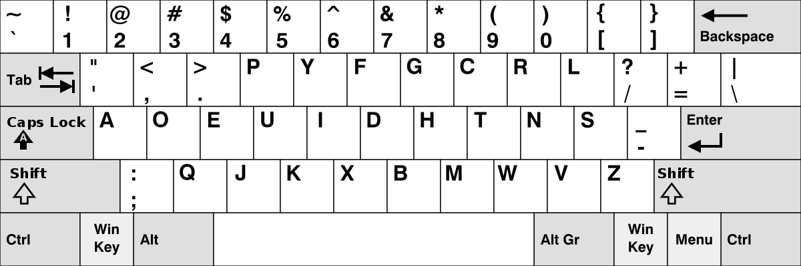
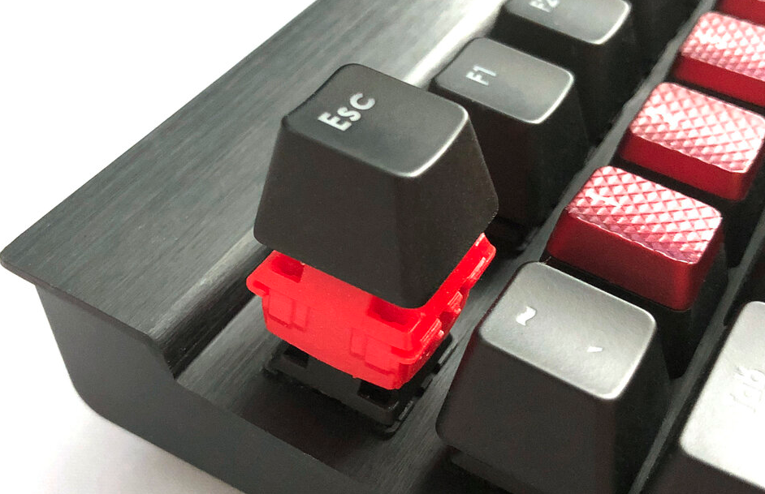
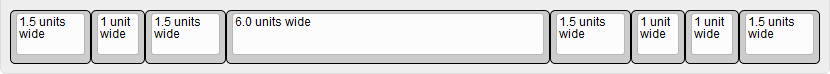

# Teclados mecánicos 101
⌨️
Algunos temas que vamos a tratar:
Diferentes tipos de teclado
Características de los teclados
Salud
Que tiene de especial un teclado mecánico
Consejos para adquirir un teclado
Mitos y leyendas!
Disclaimer!
üëæ
Esta charla no va de teclados para gaming
Efecto ghosting, implicaciones del NKRO, etc.
Nos centraremos en teclados para personas que necesitas escribir: programadores, abogados, administrativos, etc.
¿Cuántos de vosotros tenéis un teclado mecánico?
Para que os conozca un poco...
Hagamos un repaso de lo que sabemos sobre teclados, sean mecánicos o no.
Historia del teclado informático
Teletipos ➡️ Máquina de escribir ➡️ Teclado informático
Primeros diseños de teletipos y máquinas de escribir (siglos XVIII y XIX)
Hacia 1920, la máquina de escribir había alcanzado un diseño más o menos estándar (QWERTY, 1868)
En los 70 llegan los teclados informáticos domésticos tal como los conocemos hoy en día (Atari 8-bit family, Apple II series, IBM PC, etc.)
IBM Model M (1985)
Consolidando el teclado que todos conocemos
De las máquinas de escribir heredamos la distribución QWERTY (evitar atascos en las máquinas de escribir).
Tipos de teclado
Hay un montón de tipos de teclado! Podríamos clasificarlos por múltiples criterios, por ejemplo:
Tipos de pulsación
Distribución de las teclas
Distribución del alfabeto
Número de teclas
Tipos de pulsación
Algunos que seguramente ya conocéis:
Teclados capacitivos
Teclados en pantalla
Teclados mecánicos
Teclados de membrana
Teclados de tijera
Capacitivos => móvil.
Distribución de las teclas
Disposición física de las teclas:
ANSI
ISO (ISO-UK, ISO-FR, ISO-ES, etc...)
JIS
ANSI => Norte América (también usado en Países Bajos)
ANSI vs ISO
Distribución del alfabeto
QWERTY
Los más conocidos: QWERTY, Dvorak, Bépo, Colemak y Workman. https://bepo.fr/wiki/Accueil, https://colemak.com y https://workmanlayout.org
Dvorak

Dvorak => Diseñado por August Dvorak y William Dealey para ser eficiente, menor fatiga al usuario (escritura en inglés) (1936). No cuajó: USA aún estaba saliendo de la gran depresión, 2ª guerra mundial, la costumbre establecida. etc.
Número de teclas
Clasificación según el número de teclas:
100%
Tenkeyless (TKL, 80%)
60%
100% vs TKL vs 60%
En los teclados 60% para utilizar los cursos debemos mantener pulsada una tecla y utilizar otras teclas. Por ejemplo "Func" + "W" / "A" / "S" / "D"
Why not?
Teclados ergonómicos
S√≠ndrome del túnel carpiano üò±
Ángulo del codo (90 y 110 grados aproximadamente)
Grandes aliados: Apoyabrazos (silla) - reposamuñecas (mesa)
Teclados ergonómicos
Ángulo del codo
Teclados ergonómicos
Ángulo del codo
Teclados personalizados
Uso de un software de edición de video profesional
Un montador de video podría optimizar mucho su trabajo.
Otras cosas a tener en cuenta
Retroiluminación
Cable vs inalámbrico
Drivers / software de configuración
Retrolimunicación => LED
Hablemos de teclados mecánicos
La magia de los teclados mecánicos
En un teclado mecánico, cada tecla está formada por la combinación de un "switch" y un "keycap".

switch => Es el interruptor que detecta la pulsación.
Al comprar un teclado mecánico, es posible escoger el comportamiento al pulsar una tecla.
De esto se encargan los switches
ü§î
Switches
El fabricante nos indica la fuerza que debemos ejercer sobre el pulsador, el recorrido de éste y su duración.
switch tester
Esto nos permite probar cual es el switch que más se adapta a nuestros gustos. En este teclado se incluye un switch de varias marcas y varios modelos. Cada uno es distinto.
debounce time?
Osciloscopio. Es un instrumento para la representación gráfica de señales eléctricas que pueden variar en el tiempo.
debounce time?
El tiempo de "debounce" en un switch Cherry MX puede llegar a 5ms. Podríamos decir, que un teclado mécanico tiene una latencia media de 15-25ms, mientras que un teclado de membrana tiene una latencia por encima de 30ms. En un teclado de baja calidad puede llegar a 60ms
switch óptico
Emite un led infrarojo, una fotorresistencia.
clásico vs óptico
Imágenes correspondientes a un ratón, pero conceptualmente es lo mismo para un teclado. Es un problema estándar en cualquier interruptor en un circuito digital.
Aprendamos un poco sobre las keycaps.
Se fabrican en diferentes materiales, el grosor y su forma varía según el fabricante y además, deben de poder conectarse con los switches de tu teclado
ü§î
Los principales materiales son: ABS y PBT.
Tienen diferente tacto y durabilidad
ABS
Con el uso se desgasta y se muestra abrillantado.
PBT
No se abrillanta y tiene un tacto más rugoso que el ABS.
Grosor, forma y perfil
Las keycaps del teclado se pueden quitar y poner.
Grosor, forma y perfil
Diferentes perfiles (profile).
R1 => ESC, F1, F2 ...
Deben de encajar con el correspondiente switch
Tecla de tipo "Topre"
standard bottom row

En la última fila de un teclado, no siempre se reparte el espacio de la misma forma entre todas las teclas.
Existen diferentes sistemas de impresión
Grabado laser, sublimación (mediante calor), impresión ultravioleta, tampografía (Pad printing: teclados baratos, se borran), etc.
Double shot injection
Considerado el mejor sistema de "impresión". En realidad es una injección de diferentes plásticos.
Se pueden hacer teclas muy bonitas y trabajadas
Hay mercado de coleccionismo y artesanía
Observad la tecla ESC y el cable USB a juego con los colores del teclado.
Observad que es un teclado con reposabrazos incluido. Esta hecho de una sola pieza de madera.
Diseño inspirado en Pokémon
Observad donde está la tecla Enter y la barra espaciadora.
Esto es un modelo de tamaño 60% y con luces LED. Marca: Glorious PC, modelo: GMMK.
Marcas de teclados mecánicos
Leopold, Filco, Matias, Ducky, Varmilo, Vortex
¿Os suena alguna? ¿Quizás esperabais oir Corsair, Razer, Logitech, SteelSeries?
Teclados mecánicos 101
Dídac García
@didaquis
didaquis.github.io
Si tenéis preguntas o simplemente queréis darme feedback sobre la charla, adelante.